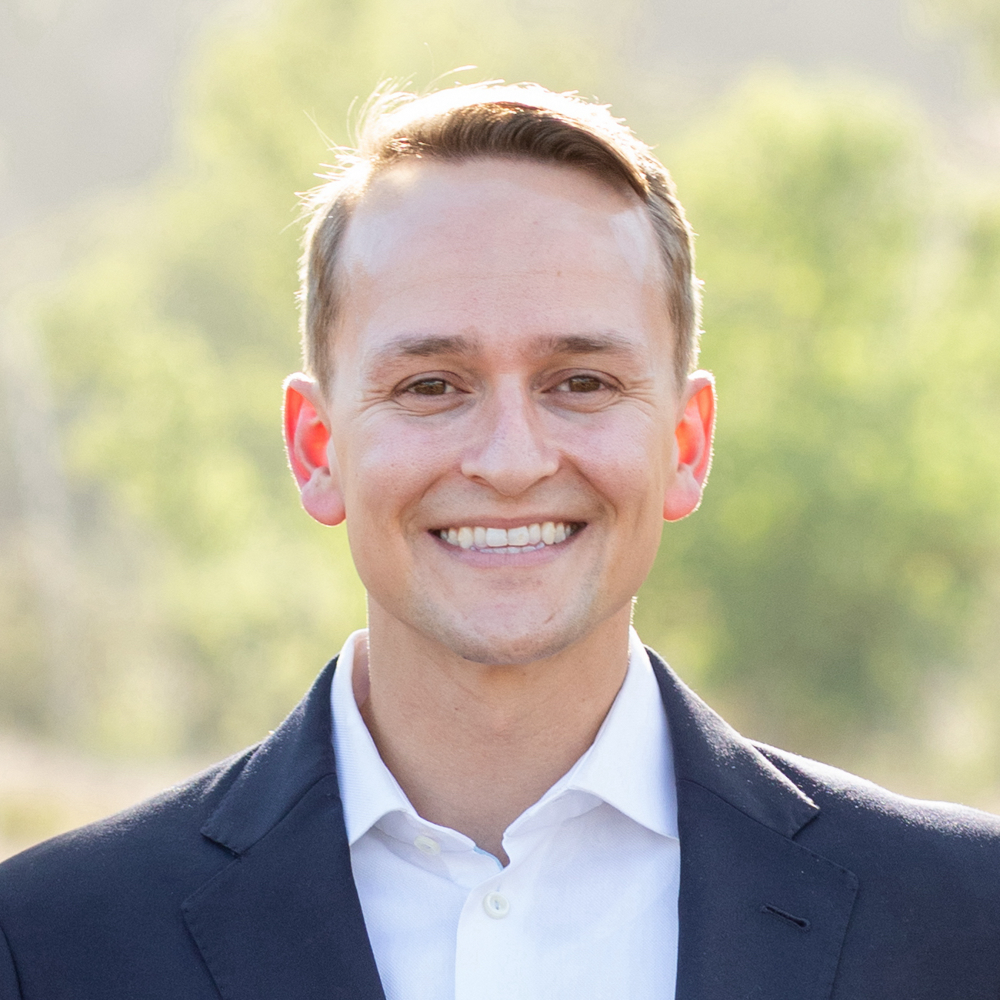

James M. Webb
I'm a builder and data scientist who loves using bits to move atoms.
2021 -
I was the first data science hire at Dray Alliance, a startup that connects truckers with shipping companies.
I led the development of the company's data infrastructure, including the data warehouse, ETL pipelines, and data visualization.
My work has focused on price optimization through modeling and experimentation, in addition to supporting the organization with ad hoc analyses.
2020 - 2021
I was the data scientist for the User Growth team at Tinder, which is responsible for
the new user experience. I designed and analyzed dozens of
experiments,
with the best-performing features achieving 2-3% increases in new user acquisition,
retention, and profile quality. Techniques involved randomized control trials,
multi-armed bandit trials, paired market tests, and difference-in-differences tests.
2019 - 2020

I was a data analyst at Bird, where I worked with the Vehicle team.
I analyzed vehicle telemetry to identify opportunities for improving
vehicle performance and to predict vehicle failures.
2018 - 2019

I joined
Deloitte's Technology Consulting practice
as a technology analyst. I led the
“Ready to Sell” workstream of an enterprise-wide technology implementation project for a
million-member regional health insurance company.
2016 - 2018

MSc in Computer Science at USC where I worked with
Atefeh Farzindar
on Natural Language Processing.
2012 - 2016

BSc in Computer Science with a concentration in Artifical Intelligence at Stanford. I declared my major
the day after I attended a talk by the team at Waymo (then Google X).